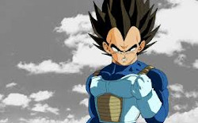

Es el primer hijo de Son Gokū y Chi-Chi, hermano mayor de Son Goten, esposo de Videl y padre de Pan. Es mitad Saiyan y mitad humano. El nombre de Gohan es un juego de palabras entre la palabra "gohan" (comida, arroz en japonés) y el nombre de su padre. En la saga de Cell tomó un rol importante ya que el terminó vencedor con la batalla con Cell. En la saga de Buu también tomó un rol importante en una de las batallas con Buu en la cual despertó su poder escondido gracias al supremo Kaio-Sama de hace 15 generaciones. En la saga de Dragon Ball Super inicialmente tiene un papel secundario al haberse alejado de las artes marciales y dedicándose a ser un erudito, pero a pesar de no entrenar puede transformarse como Super Saiyan. Gohan aún utiliza su traje de Gran Saiyaman ya que Videl se lo permite y disfruta de sus poses ridículas para algunos; tiene un gran cariño hacia Videl y su hija Pan, ya que él nunca se rendiría ante ellas tal como lo dijo Videl en el capítulo 74. Pasa a tener un papel principal al ser uno de los 10 guerreros participantes. Entrenó con Piccolo y sacó su poder dormido para luego tener una batalla con su padre, en la que peleó con todo su poder pero fue derribado por Goku.
La apariencia de Gohan cambia drásticamente a través de los acontecimientos de Dragon Ball Z, debido al hecho de que la historia comienza con él siendo un niño, y termina como un hombre casado, y con una familia propia. Pero el aspecto básico de Gohan prácticamente se mantiene igual durante el transcurso de la serie. Gohan tiene el cabello y ojos de color negro los cuales como a todos los Saiyan de la obra que alcanzaron el estado Super Saiyan, cambian su coloración y su peinado se altera según su nivel de transformación. Posee los rasgos faciales de su padre, y su tono de piel es mas similar al de su madre. También su musculatura es bastante desarrollada para su edad. De adulto mide 1.76m y pesa 61kg.
En los principios de Dragon Ball Z, Gohan tenía el pelo largo por atrás, y usaba un sombrero rojo que tenía la esfera del dragón de cuatro estrellas, junto con una túnica amarilla con el Kanji Son estampada por enfrente, un vestido de una sola pieza de color verde cuyas mangas son de color blanco, y zapatos idénticos a los de su padre. Luego, durante su entrenamiento con Piccolo, Gohan usaba un traje parecido al de Goku, con la diferencia de que tiene el Kanji "Ma" ( demonio, insignia de Piccolo) en lugar del símbolo de la tortuga y una espada, hasta que finalmente fue cambiado por un traje similar al de Piccolo. En el Arco de Freezer, Gohan tenía el pelo más corto y llevaba el mismo traje inicial que Vegeta (traje azul con botas y armadura de una sola pieza).
En el inicio del Arco de los Androides y Cell, durante la llegada de Freezer y el Rey Cold, su cabello vuelve a ser largo y viste la Armadura de combate que llevaba en Namek, y posteriormente el atuendo que vistió en la segunda parte de el Arco Saiyan. Al entrenar en el Salón del Espíritu y Tiempo junto con su padre, sus rasgos faciales toman un tono más adolescente y su estatura aumenta un poco, recorta su cabello de forma similar al de Goku, y al concluir su entrenamiento, utiliza un traje como el de Piccolo con la diferencia de que usa una faja y muñequeras de color azul marino, y una capa de tela blanca con hombreras puntiagudas más ampliadas. En los días de descanso previos a los Juegos de Cell, vistió un conjunto tradicional de Kung Fu, consistiendo de una camisa blanca, pantalones violeta oscuros y zapatos negros.
En el Arco de Majin-Boo, adquiere unos rasgos de adulto joven y una estatura idéntica a la de su padre, Gohan llevaba el cabello un poco más corto y erizado cayéndole un mechón en su frente. Al principio viste un uniforme escolar mientras asiste a la Preparatoria Estrella Naranja. Durante el entrenamiento para volar con Goten y Videl, usa un dōgi violeta similar al de Piccolo (excepto de mayor tamaño). En la edición 25º del Torneo de las artes marciales, se presenta como su alter-ego: El Gran Saiyaman. Por las normas utiliza un pañuelo blanco en la cabeza y unas gafas oscuras. Tras viajar al Planeta Sagrado, viste unas ropas Kaio-Shin obsequiadas por Kibito. Luego de concluir el ritual con el Kaio-Shin Anciano y regresar a la Tierra, usa una réplica exacta del actual Gi naranja de Goku.
En el final de Dragon Ball Z, su cabello es completamente erizado hacia arriba, similar al de Yamcha durante el Arco de Cell y usa unas gafas transparentes.
Gohan es un joven bastante tímido desde su infancia, con carácter bondadoso (inculcado por sus padres) y su inteligencia lo destacan por sobre el resto de los personajes de la serie. Debido a su naturaleza noble, Gohan detesta el hecho de que tenga que pelear como lo hace su padre, pero aparte de todo, su gran poder, regido en buena parte por sus emociones producto de su descendencia Saiyan, hace que tenga que defenderse y defender a aquellos a quienes ama, de los villanos con los que se cruza a lo largo de la serie, convirtiéndose en muchas ocasiones el más poderoso de los Guerreros Z. Cuando ya es un adulto, Gohan se vuelve un prodigio en los estudios y un hombre respetado en su campo.
Al ser un humano mestizo con sangre Saiyan, Gohan tiene una serie de conductas inusuales para alguien de su especie. En comparación a su padre y a pesar de su gran poder, Gohan no disfruta mucho de las peleas, a excepción de cuando se ve en la necesidad de proteger a sus seres queridos. Como parte de su personalidad, Gohan es una persona muy noble y al igual que los Saiyans, Gohan necesita consumir grandes cantidades de comida. En lo que respecta a sus relaciones personales, Gohan guarda un profundo respeto hacia su mentor: el archi-enemigo de su padre, Piccolo, quien lo ayudó a cambiar su manera de ser en parte debido a su actitud inocente. Cuando su padre falleció, fue Piccolo quien tuvo que entrenar con dureza a Gohan, para ayudarlo a sacar el potencial escondido dentro de su ser para defender al planeta de los Saiyans que vendrían a destruirlo. Al comienzo, la relación entre los dos era muy difícil, pero al transcurrir un año, Piccolo admite que Gohan fue el gran responsable de que hubiera cambiado su manera de ser, al punto de dar su vida para defender a Gohan del ataque de Nappa.
A raíz de esto, Piccolo puede ser considerado el padre sustituto de Gohan. Krilin también tiene una relación bastante especial con Gohan, al punto de ser algo similar a la relación que tienen un tío y su sobrino, en gran parte debido a que Krilin es un gran amigo muy cercano de la infancia de Goku. Cuando se transforma en Super Saiyan 2, su personalidad cambia drásticamente volviéndose arrogante, agresivo y violento mostrando un lado sádico nunca antes visto. A pesar de que detesta la idea de tener que pelear, Gohan irónicamente ama las artes marciales y las aventuras, casi tanto como su padre. Entre sus otros hobbies, Gohan disfruta de pescar, leer e investigar.
 |
 |
 |
 |
 |
 |